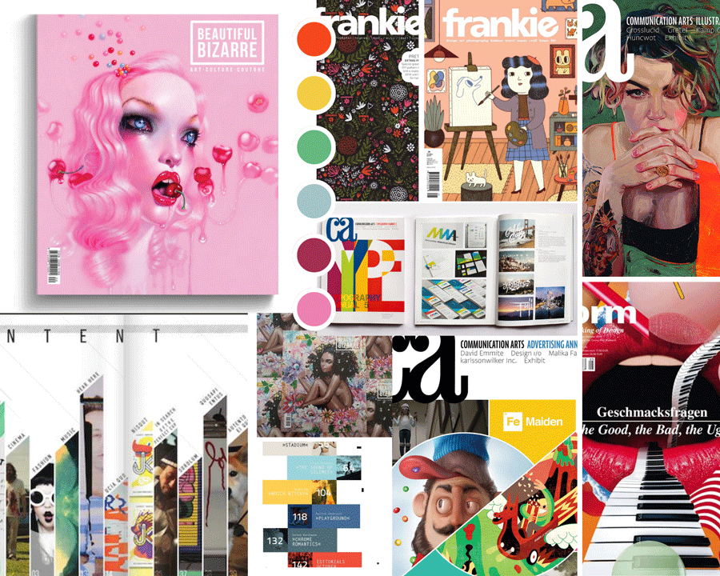
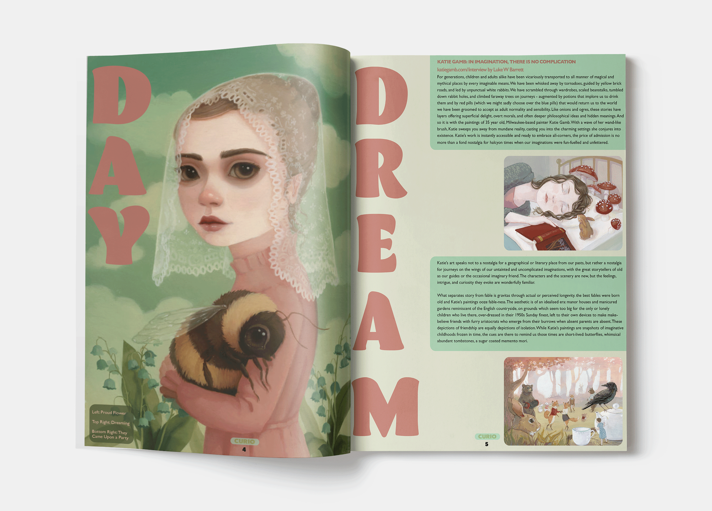
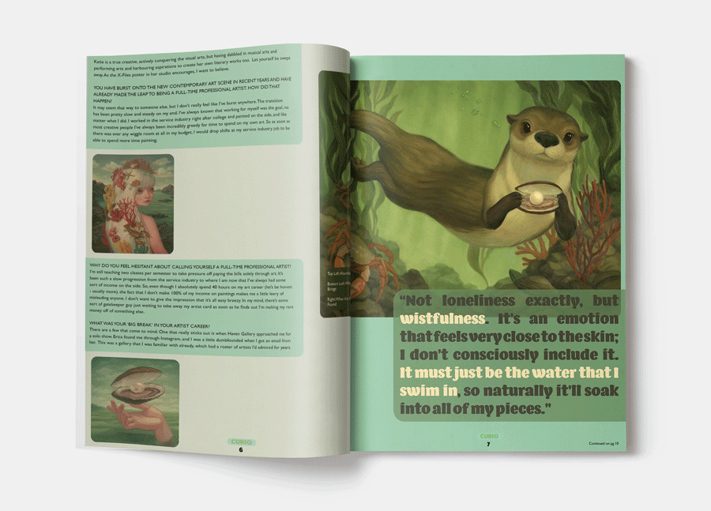

WHAT:
A design for a fictional quarterly publication highlighting work and interviews from contemporary artists, targeting an audience of artists and art enthusiasts
WHY:
To establish familiarity with publishing terminology and rules, explore typographic design through a publication lens, and to create a brand identity
I named my magazine Curio, as it was intented to feature a curated collection of curious works of art.
The color palette I decided to use for this issue allowed me to create something soft and dreamy feeling with dark undertones. This supported the artwork featured in the magazine, along with the overall feeling I was aiming to evoke with the magazine’s design.
I experimented with several fonts before finally choosing Fat Frank Heavy. Its bold weight and absence of serifs create a cool, modern feeling. I especially liked the shape of the aperture of the C. Even from a distance, the masthead is highly legible in this font, which helps with accessibility.
I ended up choosing a piece by painter Chris Guest for the cover, because I enjoyed the way it combined a 1960’s vintage aesthetic with a contemporary alternative feeling. Because of the bright colors and blending of quirky vintage and modern aesthetics, I could imagine it attracting the audience I was seeking with Curio. The negative space in this painting provided wonderful opportunities for masthead and callout line placement. Overlapping the masthead with the helmet a bit and placing the callout lines in ways that mimicked the bolts coming out of the robot helped the type connect with the image in a playful way befitting of the magazine’s style.
 For my feature article, I created two spreads featuring artwork from Milwaukee WI based artist, Katie Gamb.
I enjoyed choosing colors which played well with the color schemes used in her paintings to create a feeling of wonder and wistfulness.
The display font chosen for the feature article, Barricada Pro, was chosen because its thickness and curves give it a playful, feminine feeling, supporting the themes in the featured artwork. I chose to make the display font large and verticle, incorporating the type as part of the imagery.